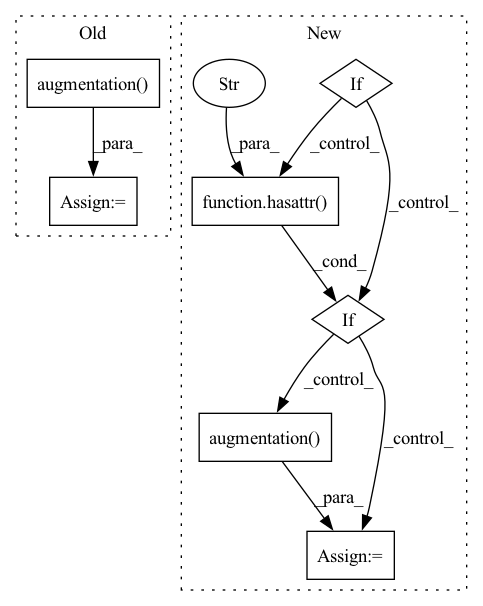

Pattern ID :9207

Before Change
// Adding time-domain SpecAugment if specified
if hasattr(self, "augmentation"):
wavs = self.augmentation(wavs, wav_lens)
feats = self.compute_features(wavs)
feats = self.normalize(feats, wav_lens)
out = self.model(feats)
After Change
wavs, wav_lens = wavs.to(self.device), wav_lens.to(self.device)
// Adding augmentation when specified:
if stage == sb.Stage.TRAIN:
if hasattr(self.hparams, "env_corrupt"):
wavs_noise = self.hparams.env_corrupt(wavs, wav_lens)
wavs = torch.cat([wavs, wavs_noise], dim=0)
wav_lens = torch.cat([wav_lens, wav_lens])
if hasattr(self.hparams, "augmentation"):
wavs = self.hparams.augmentation(wavs, wav_lens)
feats = self.hparams.compute_features(wavs)
feats = self.hparams.normalize(feats, wav_lens)
out = self.jit_modules.model(feats)
In pattern: SUPERPATTERN
Frequency: 3
Non-data size: 7
Instances
Fragment ID: 33303306
Project Name: speechbrain/speechbrain
Commit Name: 2632c7ca72ae1b904874576ec373ae89ff524731
Time: 2020-09-22
Author: plantinga.peter@protonmail.com
File Name: recipes/TIMIT/ASR/CTC/experiment.py
M Class Name: ASR_Brain
N Class Name: ASR_Brain
M Method Name: compute_forward(3)
N Method Name: compute_forward(3)
M Parent Class: sb.Brain
N Parent Class: sb.Brain
M File Name: recipes/TIMIT/ASR/CTC/experiment.py
N File Name: recipes/TIMIT/ASR/CTC/experiment.py
M Start Line: 29
M End Line: 42
N Start Line: 29
N End Line: 41
'>
Before Change
wavs, wav_lens = wavs.to(self.device), wav_lens.to(self.device)
// Adding augmentation when specified:
if stage == sb.Stage.TRAIN:
if hasattr(self.hparams, "augmentation"):
wavs = self.hparams.augmentation(wavs, wav_lens)
feats = self.hparams.compute_features(wavs)
feats = self.hparams.normalize(feats, wav_lens)
out = self.jit_modules.model(feats)
After Change
def compute_forward(self, x, stage):
ids, wavs, wav_lens = x
wavs, wav_lens = wavs.to(self.device), wav_lens.to(self.device)
wavs = self.modules.augmentation(wavs, wav_lens)
feats = self.hparams.compute_features(wavs)
feats = self.modules.normalize(feats, wav_lens)
out = self.modules.model(feats)
out = self.modules.output(out)
'>
Fragment ID: 33303312
Project Name: speechbrain/speechbrain
Commit Name: ce6bbc1ecaed456bfe526bb6a452e2ff9c9bde33
Time: 2020-10-16
Author: plantinga.peter@protonmail.com
File Name: recipes/Voicebank/ASR/CTC/experiment.py
M Class Name: ASR_Brain
N Class Name: ASR_Brain
M Method Name: compute_forward(3)
N Method Name: compute_forward(3)
M Parent Class: sb.Brain
N Parent Class: sb.Brain
M File Name: recipes/Voicebank/ASR/CTC/experiment.py
N File Name: recipes/Voicebank/ASR/CTC/experiment.py
M Start Line: 28
M End Line: 32
N Start Line: 26
N End Line: 26
'>
Before Change
wav_lens = torch.cat([wav_lens, wav_lens])
if hasattr(self, "augmentation"):
wavs = self.augmentation(wavs, wav_lens)
feats = self.compute_features(wavs)
feats = self.normalize(feats, wav_lens)
out = self.enc(feats)
out = self.output(out)
After Change
ids, wavs, wav_lens = x
wavs, wav_lens = wavs.to(self.device), wav_lens.to(self.device)
if stage == sb.Stage.TRAIN:
if hasattr(self.hparams, "env_corrupt"):
wavs_noise = self.hparams.env_corrupt(wavs, wav_lens)
wavs = torch.cat([wavs, wavs_noise], dim=0)
wav_lens = torch.cat([wav_lens, wav_lens])
if hasattr(self.hparams, "augmentation"):
wavs = self.hparams.augmentation(wavs, wav_lens)
feats = self.hparams.compute_features(wavs)
feats = self.hparams.normalize(feats, wav_lens)
out = self.jit_modules.enc(feats)
'>
Fragment ID: 33303314
Project Name: speechbrain/speechbrain
Commit Name: 2632c7ca72ae1b904874576ec373ae89ff524731
Time: 2020-09-22
Author: plantinga.peter@protonmail.com
File Name: recipes/LibriSpeech/ASR/CTC/experiment.py
M Class Name: ASR
N Class Name: ASR
M Method Name: compute_forward(3)
N Method Name: compute_forward(3)
M Parent Class: sb.Brain
N Parent Class: sb.Brain
M File Name: recipes/LibriSpeech/ASR/CTC/experiment.py
N File Name: recipes/LibriSpeech/ASR/CTC/experiment.py
M Start Line: 14
M End Line: 25
N Start Line: 14
N End Line: 26